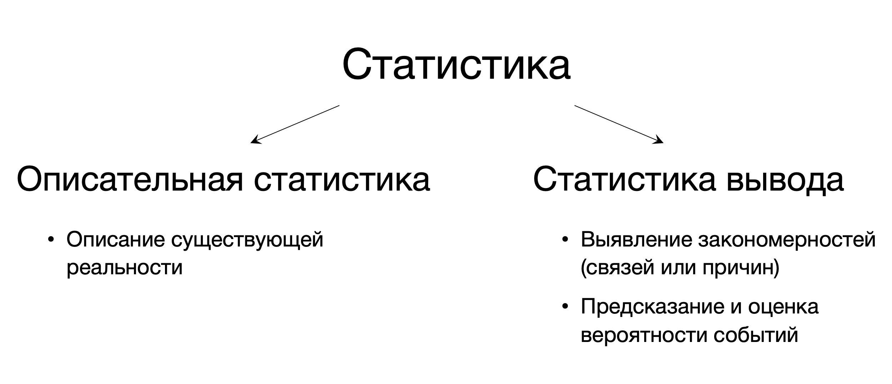

Статистика для анализа данных
2022-10-17
1 Статистика и ее место в жизни
1.1 Вероятности, формулировки и выводы
Салемские ведьмы
В январе 1692 года у дочери пастора Сэмюэла Пэрриса — 9-летней Элизабет Пэррис (род. 28 ноября 1682 года) и его племянницы 11-летней Эбигейл Уильямс (род. 12 июля 1680 года) появились симптомы неизвестной болезни: девочки кричали, издавали странные звуки, прятались под мебелью, а их тела принимали необычные позы. Когда Пэррис пытался читать проповедь, они затыкали уши. Местные жители начали выдвигать логичные, на их взгляд, предположения, все из которых сводились к тому, что девочки были прокляты ведьмой. Эти догадки вскоре подтвердил доктор Уильям Григгс, заявивший, что уже сталкивался с подобными случаями в Бостоне. Девочки указали на предполагаемую ведьму — девушку по имени Титуба, бывшую служанкой-рабыней в доме Пэррисов. Вскоре число заболевших девочек и девушек увеличилось. 1 марта 1692 года по их показаниям были арестованы 3 женщины: Титуба, Сара Гуд и Сара Осборн. Подозреваемые были допрошены и подвергнуты осмотру в поисках признаков, которые бы указывали на то, что они являются ведьмами. Главной «уликой» по делу женщин были показания девочек, к которым якобы являлись духи обвиняемых. Все три женщины были удобными целями для обвинений: Титуба имела нетитульную национальность, Сара Гуд была нищенкой, а Сара Осборн — одинокой тяжелобольной вдовой, вовлечённой к тому же в судебный спор с пуританами. Против них говорил тот факт, что женщины длительное время не посещали церковь. Эти показания суд счел адекватными и вынес сразу нескольким жительницам Салема смертный приговор.
Гравюра с просторов интернета, изображающая процесс на салемской ведьмой
Суд на Салли Кларк
В 1998 году, в Англии, состоялось громкое судебное разбирательство — английский адвокат Салли Кларк (Sally Clark; 1964 – 15 марта 2007) была осуждена за убийство двух своих новорожденных сыновей. Ее первый сын Кристофер умер в декабре 1996 года, через 11 недель после рождения, а второй сын Гарри умер при аналогичных обстоятельствах в январе 1998 года, спустя 8 недель после рождения. Месяц спустя Кларк была арестована. Защита утверждала, что оба ребенка умерли в результате СВДС (синдромом внезапной детской смерти), но обвинение настаивало, что их убила Кларк. Обвинение привлекло профессионального эксперта, авторитетного профессора педиатрии сэра Роя Медоу, который заявил, что поскольку вероятность внезапной смерти ребенка составляет 1/8543, то шанс двух смертей от СВДС в одной семье равен 1/8543 * 1/8543, то есть 1 : 73 000 000. В то время количество рождений в Англии, Уэльсе и Шотландии составляло 700 000 в год, поэтому вероятность случайного возникновения этого события составляла 1 каждые 100 лет. Салли Кларк признали виновной. Честерский суд приговорил ее к пожизненному заключению восемью голосами за и двумя против. В 1999 году она была заключена в тюрьму, но в январе 2003-го приговор отменили.

Фотография с суда Салли Кларк
Статистика нужна для того, чтобы делать выводы о происходящем в окружающем мире.
Часто выводы возможны не для абсолютного большинства случаев, а на каком-то временном интервале или для определенной группы людей. Эти может кажется нюансами, но эти ограничения очень важны, потому что, по сути, они защищают нас от вранья.
Обратите внимание на формулировки: “большинство людей, живущих в стране…”, “чаще всего люди с таким признаком…”, “наиболее вероятно, что…”. Они крайне полезны и помогают нам не сделать откровенно неверный вывод: чаще всего мы ничего не можем сказать об абсолбтно всех людях на планете (но есть некоторая вероятность, что можем)
Цифры обманчивы, особенно когда я сам ими занимаюсь; по этому поводу справедливо высказывание, приписываемое Дизраэли: «Существует три вида лжи: ложь, наглая ложь и статистика».
1.2 Определение статистики
Статистика — это набор математических процедур, которые необходимы для организации, обобщения и интерпретации информации.
Стати́стика — отрасль знаний, наука, в которой излагаются общие вопросы сбора, измерения, мониторинга, анализа массовых статистических (количественных или качественных) данных и их сравнение; изучение количественной стороны массовых общественных явлений в числовой форме
“Статистика – это раздел математики, изучающий описание наблюдаемых (на-пример в экспериментах) данных с помощью набора обобщенных параметров (таких как среднее значение) и ищущая закономерности связи между исходными данными и этими параметрами”.
Статистика – набор обобщенных вычисляемых характеристик, полученных при обработке параметров данных, которые являются объектом анализа. Слово используется также и в смысле раздела математики или отдельной науки – математической статистики.
Статистика – или математическая статистика, раздел математики, в которой систематизированы методы определения особенностей совокупностей, которые являются объектами исследования, и включающая описательную статистику и статистический вывод.
1.2.1 Применение статистики
Вопрос, в которых точно не обходится без статистики:
- Сколько человек живут у нас в стране?
- Дадут ли мне кредит?
- Сколько денег платить сотрудникам? А если сотрудник работает уже 5 лет? А 10?
- Что, прости господи, происходит с коронавирусом?
- Если я провела исследование, как понять, можно ли верить его результатам?
Можно выделить несколько самых выжных задач статистики:
- Описать существующую реальность
- Выявить закономерности: связи неких событий между собой или причины событий
- Предсказать и оценить вероятность наступления какого-либо события
1.3 Виды статистики
Представим, что мы провели исследование, например, о влиянии кофеина на внимание или использования нового инструмента рабочей коммуникации на продуктивность сотрудников. Прежде, чем делать вывод о том, как кофеин повлиял на способность сохранять внимание или о том, что новый инструмент повысил продуктивность сотрудников, нам хорошо бы сначала понять, что за данные у нас, можно ли им доверять? Как в целом они себя ведут, получились непрерывные значения, или там есть какие-то провалы? Каковы максимальные и минимальные значения, они соотноосятся с нашими представлениями о реальности? А какие самые встречающиеся? Какова вообще встречаемость разных значений? Ответы на эти вопросы позволяют нам поисследовать полученные данные и на начальном этапе проверить, не допустили ли мы какой-либо ошибки в данных, и первично оценить наши шансы на проверку предположения.
Такое описание данных называется описательной статистикой (descipritve stats), потому что, как уже понятно из названия, описывает наши данные. Здесь мы можем получить сведения о характере данных, “пощупать” их, понять что-то – но не делаем выводы относительного того, влияет ли на эти данные какой-либо параметр или связано ли изменение данных с каким-либо параметром.

После того, как мы поисследовали данные и признали их адекватными и пригодными для работы, мы можем использовать их для выводов относительно выдвинутых предположений. Что там все-таки прооисходит с кофеином, он увеличил способность концентрироваться и сохранять внимание, или, наоборот, ухудшил? А с введением нового способа коммуникации между сотрудниками, стали ли они после этого делать больше задач, или все осталось на прежнем уровне? Чтобы ответить на эти вопросы, нам нужно сравнить данные и оценить различия между ними. Этим занимается другой раздел статистики – статистикой вывода (inferential stats). Здесь уже мы не занимаемся описанием данных, а непосредственно делаем выводы их них, о связи переменных между собой или о влиянии одной переменной на другую. Например, если мы правильно провели статистический анализ (а это не такая тривиальная задача – спойлер, большинство выводов, которые делаются на основании данных, ложные), то сможем заключить, что пить много кофе может, наоборот, негативно влиять на внимание, а использовать новый инструмент, где писать сообщения просто, быстро, и можно добавлять разные эмодзи – способствует увеличению сделанных сотрудниками задач. И можем даже предсказать, насколько больше задач будут делаться в таком случае.